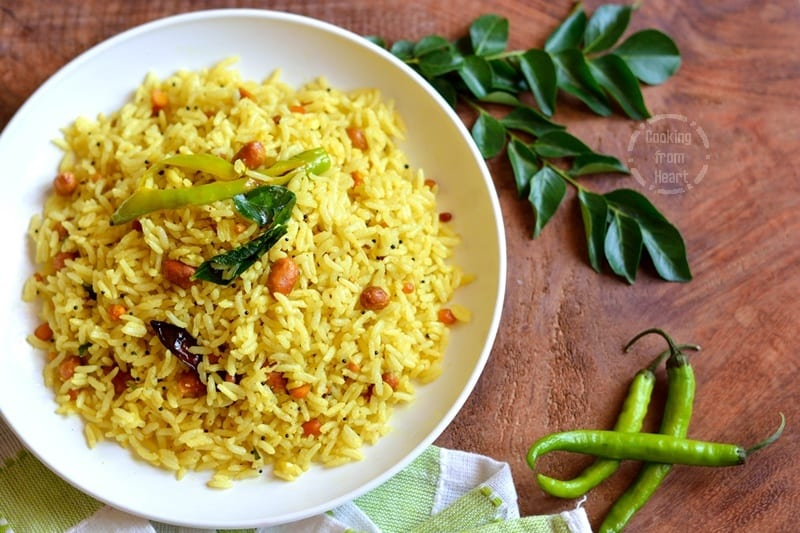
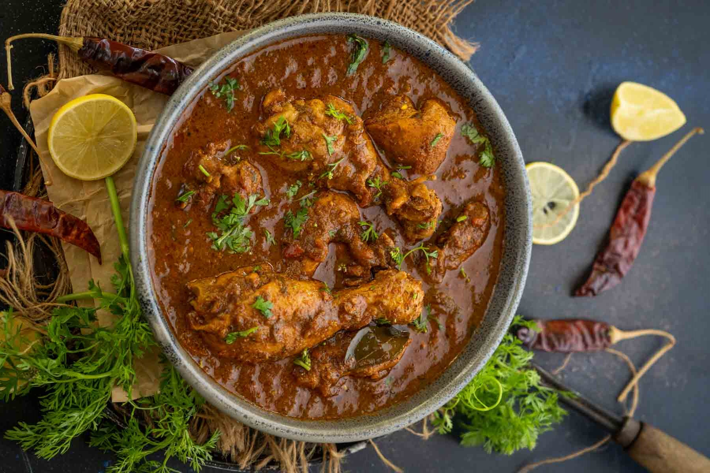
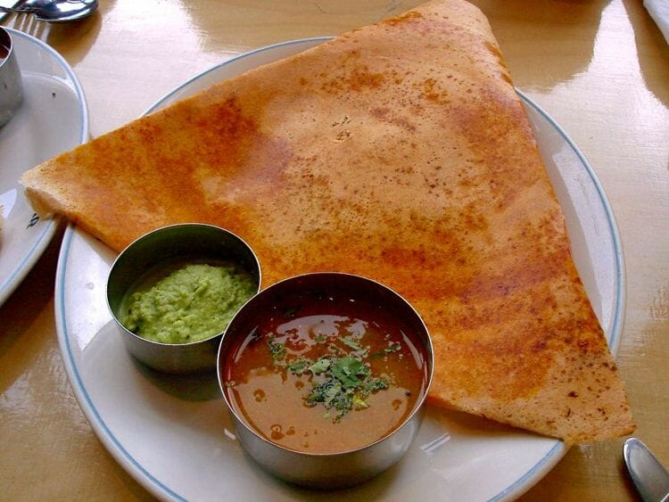
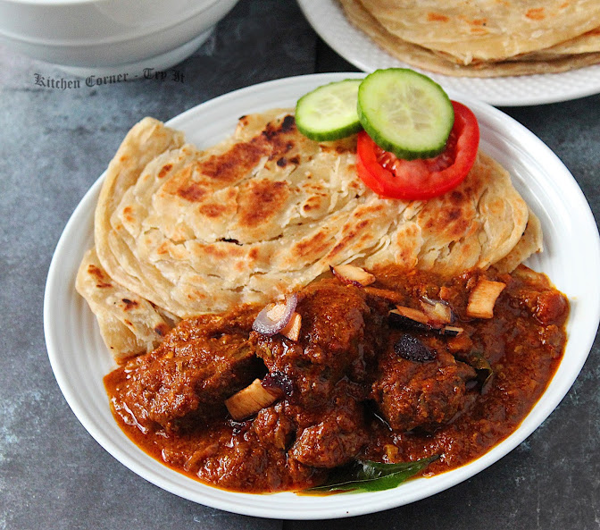

PULIHORA

History
Often associated with religious and temple cuisine, it is a common prasadam
(offered remnants of deities) in South Indian temples. Devotees also receive
this prasadam after visiting temples, amongst other rice preparations like
lemon rice and sakkara pongal, and it is considered to be a divine and auspicious
dish. Puliohara also holds cultural significance in South Indian households for
often being prepared during important festivals like Ugadi, Varalakshmi Vratham
and Diwali. The tangy flavour of tamarind is believed to symbolize the various
flavours and experiences of life, making it a meaningful dish in the context of
Indian culture and spirituality.
INGREDIENTS
For Pulihora Pulusu:
250 grams tamarind
5 chilli, chopped
handful curry leaves
3 tbsp salt
2 tbsp jaggery
1 tsp turmeric
For Pulihora Spice Mix:
2 tbsp sesame
1 tbsp coriander seeds
1 tsp cumin
1 tsp pepper
1 tsp mustard
¼ tsp methi
For Tempering:
¾ cup oil
1 cup peanut
1 tbsp mustard
2 tbsp urad dal
2 tbsp chana dal
1 tsp hing
5 dried red chilli
few curry leaves
METHOD
firstly, soak 250 grams of tamarind in 2 cup of hot water for 30 minutes.
squeeze the pulp of tamarind and filter it out.
add more water to squeeze all the pulp from the tamarind.
concentrated tamarind pulp is ready.
transfer the tamarind pulp to a large kadai.
also add 5 chilli, a handful of curry leaves, 3 tbsp salt, 2 tbsp jaggery, and 1 tsp turmeric.
mix well making sure everything is well combined.
cover and boil for 20 minutes stirring in between.
cook until the tamarind is cooked well.
to prepare the pulihora spice mix, in a pan take 2 tbsp sesame, 1 tbsp coriander seeds, 1 tsp cumin, 1 tsp pepper, 1 tsp mustard, and ¼ tsp methi.
dry roast on low flame until the spices turn aromatic.
cool the spices completely, and grind them to a fine powder.
transfer the pulihora masala powder to the tamarind mixture and cook for 1 minute.
to prepare the tempering, heat ¾ cup oil and fry 1 cup peanut until it turns crunchy.
add 1 tbsp mustard, 2 tbsp urad dal, 2 tbsp chana dal, 1 tsp hing, 5 dried red chilli, and a few curry leaves.
to prepare the tempering, heat ¾ cup oil and fry 1 cup peanut until it turns crunchy.
add 1 tbsp mustard, 2 tbsp urad dal, 2 tbsp chana dal, 1 tsp hing, 5 dried red chilli, and a few curry leaves.
to prepare the temple-style pulihora, mix 3 tbsp of tamarind rice instant mix with 3 cup of boiled rice.
---------------------------------------------------------------------------------------------------------------------------------------------------------------------------------
HYDERABADI BIRYANI

History
Biryani has been a part of Hyderabadi cuisine tradition for nearly 400 years.
It is believed to have been served directly from Persia. Hyderabadi Dum Biryani,
the key dish of the royal kitchen came to India after Emperor Aurangzeb appointed
Nizam-Ul-Mulk as the new ruler of Hyderabad.Another intriguing tale attributes the
creation of the dish to Mumtaz Mahal. It is believed that when she once visited an
army barracks, she discovered the soldiers were malnourished. The biryani was created
when she asked the chef to produce a special meal that offered balanced nutrients.
INGREDIENTS
For Biryani:
3½ cups water
2⅓ cups long-grain Basmati rice
4 Bay leaves
½ cup Warm Milk
1 pinch saffron strands
½ cup Warm Milk
½ cup Warm Milk
2 green chillies chopped
For Marinade:
500 gms Chicken Thighs or Drumsticks
500 gms Chicken Thighs or Drumsticks
500 gms Chicken Thighs or Drumsticks
5 cardamom pods
2 Cinnamon Sticks
2 whole star anise
1 bunch of fresh coriander leaves
1 bunch of fresh mint leaves
½ tsp black cumin seeds
1 cup Yoghurt
2 tsp Lemon Juice
2 tsp ginger garlic paste
2 tsp red chilli powder
¼ tsp turmeric powder
1 tsp biryani masala
salt to taste
METHOD
Grind black peppercorns, cloves, cardamom, cinnamon, star anise and cumin seeds into a fine powder. Finely chop mint and coriander leaves.
Add dry spice mix, chopped mint and coriander leaves and other marinade ingredients in a mixing bowl and combine all of them. Add the chicken and coat it well. Use a plastic wrap to cover the bowl and let the marinated chicken sit in the refrigerator for about 2 hours.
Wash the rice thoroughly. Take a saucepan and add water and rice in it. Once it boils, add 2 bay leaves and reduce the heat to medium-low. Cover and let it simmer until rice is partially cooked and is firm. This might take about 5 minutes. Once done, drain the rice. Add saffron to a bowl of milk, stir and keep it aside.
Add ghee to a large pot with a tight-fitting lid or a pressure cooker, heat it over medium-high flame. Stir in onions until golden brown for about 15 minutes. Drain them on a paper towel. Switch the flame to low and add bay leaves, chillies, and stir for about 1-2 minutes. Remove a tbsp of ghee from the pot and set it aside.
Add the chicken along with the marinade into the pot and cook for 2 minutes per side until it’s no longer pink. Spread the drained rice on top, sprinkle fried onions and drizzle ghee with saffron milk on top. Cook for 8-10 minutes over a high flame covered with a lid. Then reduce the flame to low and continue cooking for 5 minutes.
Turn off the flame and let it stand covered for about 15 minutes. Garnish with mint and coriander leaves on top. Serve hot with raita or green salad.
---------------------------------------------------------------------------------------------------------------------------------------------------------------------------------
CHETTINAD CHICKEN CURRY

History
The Chettiars, a prosperous community of traders and financiers, are the ones which are
credited with creating the flavoursome Chettinad cuisine. Their cuisine is characterized
by lavish use of spices, particularly black peppercorns, cloves, and cinnamon, resulting
in dishes that are both spicy as well as aromatic.Chettinad cuisine originates from the
Chettinad region in the Sivagangai district of the state of Tamil Nadu in South India.
This cuisine is one of the most renowned in South Indian food and has a rich history.
Traditionally, the Chettiars traded salt and spices that added a rich flavor to the food.
INGREDIENTS
500 grams Chicken bone-in , curry cut
1 teaspoon Turmeric Powder
3 - 4 sprigs Curry leaves
2 tablespoons Coconut Oil
1 teaspoon Mustard seeds
½ teaspoon Fennel seeds or Saunf
½ teaspoon Fennel seeds or Saunf
1 teaspoon Ginger Paste
3 Onions sliced
¼ cup Tomato Puree
Salt to taste
For Spice Mix:
1 tablespoon Cumin seeds or Jeera
5 Kashmiri Red Chillies dry Note 2
1 tablespoon Coriander seeds or Dhaniya
1 tablespoon Black Pepper whole or Kali mirch
½ teaspoon Fennel Seeds or Saunf
½ teaspoon Fennel Seeds or Saunf
4 pods Cardamom Green
¼ cup Coconut Grated
METHOD
To prepare sarsong ka daal:
Dry roast all the ingredients under spice mix on a low flame for 3-4 minutes till they start smelling nutty and the coconut is a light golden. Be careful not to burn the spices. Grind with 2 tablespoons water into a coarse paste.
While the spices are roasting, rub turmeric powder on the chicken and keep aside.
In a pan, heat coconut oil and add mustard seeds and fennel seeds. Once they start crackling add the spice paste and cook for 5-7 minutes.
Next add the onions and ginger garlic pastes. Cook till the onions are a light pink, and add tomato puree.
Wash the chicken and add it to the pan along with ¼ cup water, curry leaves and salt.
Cover and cook on a medium flame for 15 minutes. Keep checking every few minutes to make sure it doesn't stick to the bottom.
After 15 minutes, remove the lid and increase the flame to let the liquid start evaporating. Once the chicken is cooked and most of the liquid is gone, cook it for 2-3 minutes while stirring it continuously in the pan to roast it before switching off the flame.
Serve Chettinad Chicken Pepper Roast with hot rotis and ghee rice.
---------------------------------------------------------------------------------------------------------------------------------------------------------------------------------
MYSORE MASALA DOSA with RED CHUTNEY

History
The original Mysore masala dosa, also known as Mylari dosa in Mysore, has
very humble origins. The Vinayaka Mylari Hotel, the original creators of this
amazing Mysore masala dosa still tantalizes the taste buds of all those in search of it.
It is thin and roasted crispy brown outside and filled inside with signature spicy Potato
mixture. Finally it is topped with spicy red garlic chutney outside. But this dosa is a
special one, they have a spicy masala inside them, so they don't need any side dish with
them.
INGREDIENTS
For Making Batter:
2 cups regular rice
½ cup urad dal (skinned and split black gram)
½ cup cooked rice or poha (flattened rice)
¼ teaspoon methi seeds (fenugreek seeds)
rock salt (edible and food grade) or sea salt as required
water as required for grinding the batter
For The Potato Palya/Filling:
2 large potatoes – boiled
¾ cup chopped onions
1 inch ginger (adrak) – chopped
1 or 2 garlic (lahsun) – optional
12 to 15 curry leaves
1 green chili – chopped
½ or ⅔ teaspoon black mustard seeds
½ or ⅔ teaspoon turmeric powder
1 pinch red chili powder
1 pinch red chili powder
½ teaspoon lemon juice
¼ or ½ cup water
1 or 2 tablespoon chopped coriander leaves
1 tablespoon oil
salt as required
For The Red Chutney:
2 tablespoons roasted chana dal (roasted bengal gram)
4 to 5 garlic – small to medium-sized
2 to 4 dry red chilies – soaked in hot or warm water for 20 to 30 minutes. adjust depending on the type of chillies. for a more spicy taste add 3 to 4 dry red chilies.
1 teaspoon seedlees tamarind
2 tablespoons desiccated coconut – unsweetened
¼ cup onion – roughly chopped
salt as required
3 tablespoons water – to blend or grind, add as needed
METHOD
For Making Batter:
Pick and rinse the rice and urad dal in water for 3-4 times.
Soak the rice, urad dal and methi seeds in a large bowl in enough water for 4-5 hours.
In a wet grinder, grind the rice, urad dal, methi seeds and cooked rice or poha with enough water.
Grind till you get a fluffy and smooth consistency of the batter.
Take the dosa batter in a large bowl and mix salt.
Cover the bowl loosely and let the batter ferment for 7-9 hours.
For The Potato Palya Or Filling:
First boil the potatoes in a steamer or pressure cooker, till they are fully cooked.
Peel and either just crumble them with your hands or chop them.
Heat oil in a pan or kadai.
First fry the mustard seeds till they splutter.
Now add the chopped onions and saute till they become soft.
Add the ginger, garlic, green chilies, curry leaves and saute for some 20-30 seconds.
Now add the turmeric powder, red chili powder and asafoetida.
Stir for 2-3 seconds and add the potatoes.
Stir and add water plus salt.
Cover and simmer the potatoes till the water dries up.
Lastly add the lemon juice and stir well.
Add coriander leaves and mix well with the potatoes.
Keep the potato palya aside.
For Red Chutney For Dosa:
Take all the ingredients in a small blender or chutney grinder.
Add very little water and grind to a smooth paste.
Keep aside.
Making Mysore Masala Dosa:
On a tava or a flat frying pan spread 1 or 2 tsp oil. If using non stick pan, then don’t spread oil. You won’t be able to spread the dosa batter then.
Take a medium sized ladle or a big spoon and with circular motions spread the dosa from the center towards the edges on the pan.
Sprinkle some drops of oil from the top.
Cover the dosa with a lid.
Let the base get browned and the top side get cooked completely.
Spread 1 or 2 tsp of the red chili chutney on top of the dosa.
Place 2-3 tbsp of the potato stir fry on top of the mysore dosa and spread lightly.
Fold and serve the mysore masala dosa hot with coconut chutney and sambar.
---------------------------------------------------------------------------------------------------------------------------------------------------------------------------------
MALABAR PAROTA with KRELA BEEF CURRY

History
One theory is that it has its origin from Ceylon (Sri Lanka). Parotta was popularized
in Tamil Nadu by Sri Lankan laborer's working in Toothukudi port. Later it gained popularity
in Kerala as well. It became popular around 1960 in Malabar coast then by 1980 it became
almost a staple dish throughout Kerala.The combination of beef and porotta has become a
beloved food pairing in Kerala, with many people enjoying it as a hearty and satisfying meal.
Additionally, the availability and affordability of these food items may also contribute to
their popularity in the state.
INGREDIENTS
For Beef Curry:
1 kg boneless beef (cut in small pieces)
4 big size Onions thinly sliced
4-5 fresh green/red Chilli thinly sliced
1 big Carrot thinly sliced (optional)
1 tablespoon Ginger-Garlic paste
1 teaspoon Turmeric powder
2 teaspoon red Chilli powder
1 +1/2 tablespoon Coriander powder
2 tablespoon Black Pepper powder
2 tablespoon Curry powder
1 teaspoon Garam masala powder
5-6 sprigs Curry leaves
2 tablespoon Cooking oil
to taste Salt
For tempering:
1 teaspoon Cooking oil
4-5 sprigs Curry leaves
2-3 dry red Chillies
6-7 small pieces of dry Coconut (optional)
For Malabar paratha:
2 cups All purpose flour
1 teaspoon Sugar
1 teaspoon Salt
1/3 rd cup Vegetable oil/Vegetable shortening (approximately)
1 cup lukewarm Water (approximately)
Some Onion rinds to garnish
METHOD
For Beef Curry:
Take 1 kg of good quality beef(boneless) and cut into small pieces. You can use mutton or lamb meat instead of beef.
Cook the beef in a pressure cooker with salt, 1 teaspoon of pepper powder, curry powder and a little water just enough to cover the meat.
Pressure cook for 4-5 whistles and then remove the cooker from the flame. When pressure releases completely, remove the lid. The meat in this stage should be half done.Keep aside.
Cut all the vegetables in thin strips. You can use shallots instead of onion. For that you have to use 10-12 shallots.
Heat oil in a pan and add curry leaves and sliced onions.Saute until the onions turn translucent.
Add in ginger-garlic paste and saute for a minute.
Next add in sliced chillies and carrot.
Stir and cook(medium heat) until the carrot becomes little soft and then add in all the spices like turmeric powder, coriander powder, red chilli powder,garam masala power and remaining pepper powder.
Mix well by adding 2-3 teaspoon of water.Cook in low heat until oil starts separate from the gravy.
Transfer the cooked beef with the remaining stock to the pan, mix well with the masala.
Cover and cook in medium low heat until meat cooks completely and becomes soft. It will take about an hour.
When the meat becomes soft and gravy dries out, beef fry will be ready. The gravy of the meat should be dries out. I keep a little gravy as my kids always demand a little thick gravy with their meat.
You finish your cooking by tempering 1 teaspoon of oil with some curry leaves and dry red chilles. I don't have dry coconut pieces in my pantry. If you have you can fry in little oil and add.
Your delicious beef fry is completely ready now.
For Malabar Parota:
For the malabar paratha take 2 cups of all purpose flour, 1 tsp sugar, 1 tsp salt and 2 table spoon of oil.
With finger tips, mix everything well and then add in warm water in batches to make a dough. I use almost 1 cup of warm water to make the dough.
Cover and give the dough a rest of 1/2 an hour or more.
19
After rest time, knead the dough again for few minutes.take a orange size portion of the dough.
Roll it to make a thin roti (round sheet).21
Spread 1 teaspoon of oil/ shortening to the sheet and then sprinkle little flour.
Rub with your fingers and then start folding from one side to make plates. This step is for making the layers/flakes to the paratha.
Make plates one over anther as shown in the picture.Press lightly and to hold the plates nicely.
Roll from one edge to make a spiral disk. You will find a multiple layered spiral disk.6
Similarly make spiral disks out of the dough. I made 5 layered disks out of the total dough.
Rest these again for 10 minutes.
28
After 10 minutes take a disk and roll to make a little thick paratha.
9
Heat a griddle and cook the paratha on both sides for a minute.
Then apply a teaspoon of oil/shortening on both sides and cook for a couple of more minutes in low heat.
31
Cook in low heat so that the paratha should cook from inside also. When the paratha is golden brown remove from heat.
Similarly fry all the malabar porotas/parathas.
Serve them with our already prepared spicy beef fry. I garnished the dish with some onion rinds.
 SOUTH INDIAN
SOUTH INDIAN